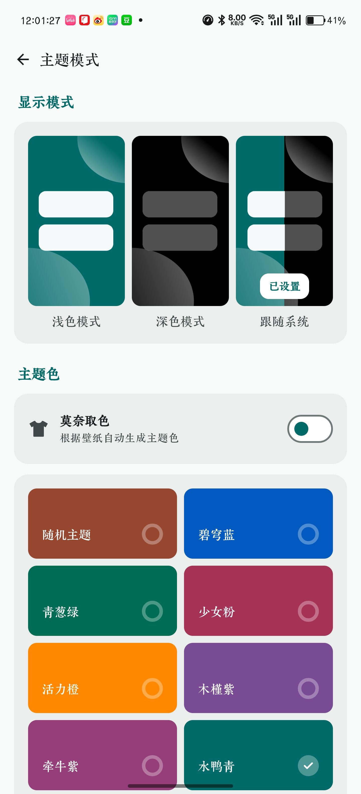
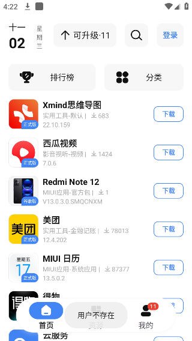
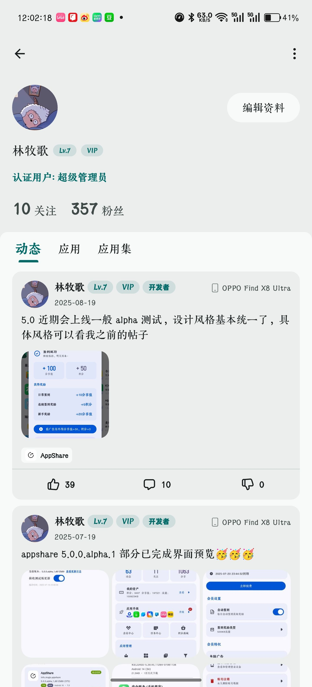

AppShare 藏得真深的五个冷门功能，用了半年才发现第三个
大多数人把 AppShare 当应用商店用，其实它藏着莫奈取色、OEM 定制应用归档、内测版快速通道等五个极少人注意的隐藏功能——每个都挺好用。
你以为 AppShare官网 只是一个"多版本应用下载站"？老实说我一开始也是这么想的——搜索、下载、安装，一条龙完事，跟别的商店没差。但把它翻了快半年，翻着翻着发现有些功能藏得真的深，深到官方都不怎么宣传，只有把设置菜单一层一层扒开的折腾党才碰得到。
今天把五个挖到的冷门功能唠唠，不是每个都用得上，但知道它们存在，说不定哪天就救你一命。
一、莫奈取色：让主题色跟着你的壁纸走
第一个发现的隐藏功能是主题色自动跟随壁纸。
事情是这样的：某天换了张绿色系的壁纸，打开 AppShare 突然发现整个界面从默认的碧穹蓝变成了青草绿——我以为是版本更新改了默认色，去设置里扒了半天才找到原因：设置页顶部有个"莫奈取色"开关，打开后主题色会从系统壁纸自动提取主色调。
藏得有多深？得先进「我的」→ 右上角设置 → 主题模式，才看得到那个小小的开关——我是去AppShare文档翻了一下才找到这个路径的。
前提条件要注意：Android 12 及以上系统才有这个能力，Android 11 及以下的朋友就别找了，找不到的。而且系统桌面得真的设了壁纸，没壁纸它也无从取色。
有意思的是，它不是给你生成乱七八糟的渐变色，而是从壁纸里提取一个主色直接当主题色——我试过用夕阳红、深海蓝、抹茶绿的壁纸，AppShare 每次都能抓到最顺眼的那个色调，配合系统自动适配明暗背景，浅色模式和深色模式下都不违和。

二、8 种预设主题色 + 随机模式，即时切换不用重启
说到主题色，顺手补一个：AppShare 内置了 8 种预设色，碧穹蓝、少女粉、青葱绿、活力橙、木槿紫、牵牛紫、水鸭青，还有最后一个叫"随机主题"——每次点开应用随机选一种。
重点不是色多，是切换即时生效——点一下色块，界面立刻换色，不用重启不用重载。我把这个功能当成了心情调节剂：早上活力橙、加班水鸭青、周五少女粉，上班摸鱼的时候点点色块切着玩。
随机主题那个选项藏在最右下角，标注最小，很容易以为是个 bug 点一下直接关页面。
三、OEM 定制应用归档：换机后装回小米相机不用刷机
这个是我觉得 AppShare 跟其他商店最本质的差异，也是藏得最深的功能——它把每个应用的历史版本、测试版、OEM 定制版都当成独立对象归档保存，不是只挂最新版。
我是怎么挖到的？换手机那天，从小米换到 OPPO，系统相机用不惯，想装回原来的小米 MIUI 相机。搜了一圈别的商店，要么只有通用版，要么根本找不到 MIUI 定制版。抱着试试看的心态在 AppShare 搜了"MIUI 相机"，结果真的有——不止一个版本，从 MIUI 10 到 MIUI 14 的定制版整整齐齐排着。
AppShare 的版本归档分三类：历史版本（应用换代后旧版仍在）、测试版与内测版（打开快速更新通道就能接收）、厂商定制系统应用（小米、华为、OPPO、vivo 的系统应用都有收录）。
搞机党和刷机的朋友应该秒懂这有多方便——以前想装回原厂系统应用，得去刷机包里抠，现在直接按名字搜、下载、装，完事。

四、快速更新通道：抢先内测版，但有个强制更新的坑
接上一条，内测版那个通道得单独说。
在设置里打开快速更新通道后，AppShare 会推送还没全量推送的 beta 版本。我赶上过一次——某个社交应用的内测版比正式版早了两周，抢先体验了新的夜间模式和消息分组，当时爽得不行。
但这里有个必须提醒的坑：内测版每次更新都是强制更新。我有次忘了关通道，凌晨三点被 AppShare 推了一个内测版更新，醒来发现界面大变、有些功能被砍了，还退不回去——因为内测版不提供降级入口。
从此我的操作流程变成：内测期间用着爽就用，内测结束立刻把快速更新通道关掉，留个"历史版本"兜底，别让强制更新搞崩体验。
五、应用集：把零散资源打包成主题化推荐
最后一个，社区里藏的"应用集"功能。
广场动态刷多了发现，有些用户的主页下有个"应用集"标签页，点进去是一个个主题化的应用推荐列表——比如"大学生必备效率三件套""root 搞机工具箱 2024""离线观看影视播放器合集"，每个集子都有十多个应用，带简介带说明。
AppShare 的用户主页有三个 tab：动态、应用、应用集。应用集这个 tab 是藏得最隐蔽的——你得先点开某个用户的主页，注意到除了"动态"和"应用"之外还有第三个 tab，才会发现这个功能存在。
对于资源分享者来说，应用集比单传一个个应用高效多了——一个集子推出去，整套工具链就都带上了；对于普通用户，搜到一个好的应用集，比在分类里一个个找省时间。

几个别踩的小坑
说五个发现的同时，顺便提几个用下来感觉不太友好的地方：
- 黑名单是单边的：在广场拉黑了某个用户，他看不到你的动态，但你自己也没个地方批量管理黑名单，得去每个被拉黑的用户主页手动取消。
- 个人资料背景图只能从相册选：不能直接从 AppShare 内部下载的图里挑，还得先保存去相册再回来选，有点绕。
- 等级积分的置顶功能门槛有点高：动态置顶和评论置顶都需要相应的等级或积分，新号刚进来基本用不了，得先活跃一阵子攒攒分。
写在最后
AppShare 这类应用工具最容易被标签化——"应用商店""版本归档"，好像它的价值就那一层。但挖到底层会发现，它藏的这些小功能：主题色跟着壁纸走、装回原厂系统应用、抢先内测版、把零散资源打包成集……每一个都是在跟主流应用商店"只挂最新版"的逻辑对着干。
说到版本归档这件事，AppShare 自身的资料也同步维护在 GitHub、Gitee、GitCode 三个仓库，不同网络环境的朋友可以按需取。
把一个工具翻到底，总有点惊喜。